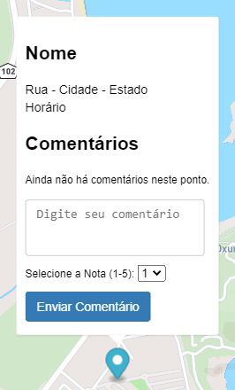
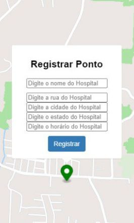
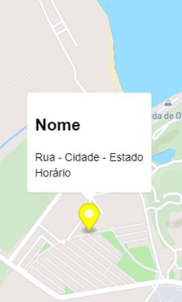
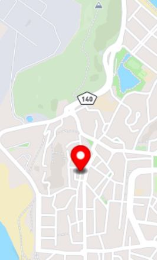

Eventos do mapa

Marcadores azuis são pontos com informações (nome, rua, cidade, estado, horário e avaliações) de instituições médicas já verificadas e adicionadas ao mapa. É possível interagir com este, ao avaliar, deixando um comentário com sua respectiva nota. Cada usuário só pode avaliar uma vez cada ponto.

Ao apertar no mapa, abre-se um marcador verde para colocar informações (nome, rua, cidade, estado, horário e avaliações) de instituições médicas, para estas serem sugeridas a serem adicionadas ao mapa.

Os marcadores amarelos são pontos já sugeridos no mapa, logo não são revisados. Sua serventia é para que o usuário tenha noção, no mapa, se um ponto que não está adicionado já foi sugerido. Este não tem opção de avaliação.

O marcador vermelho é o ponto gerado, no mapa, após o usuário fazer a ação de si localizar. Ele não responde às interações do usuário.